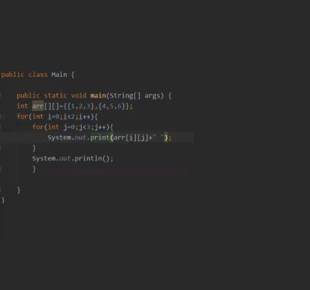

Uma matriz é um vetor de vetores, todos de mesmo tamanho. Em Java, é possível criar um vetor de vetores onde cada elemento tem um tamanho diferente. Nesse caso, cada elemento deve ser criado de forma independente. Todo vetor em Java tem o atributo length que define o seu número de elementos.
